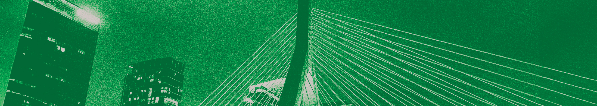
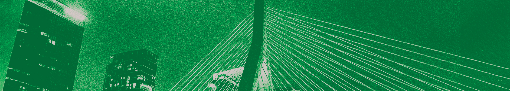
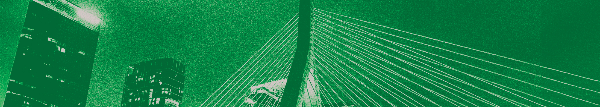

Home
Legal
Healthcare
Employment & Housing
Behavioral Health
Youth
Advocacy
Nightlife
Arts, Music, & Theater
Athletics
Spiritual & Faith
Misc

Misc. Resources
Peer Support Space Inc-various community groups for
different sectors of the LGBTQ+ community
Boston pride-various resources
MaeBright: LGBTQ+ Competency training for businesses
The Queer Neighborhood Council
Queering Boston
Queer Scouts Boston
BIPOC Therapists: Resources for BIPOC therapists in
or entering the field
 
